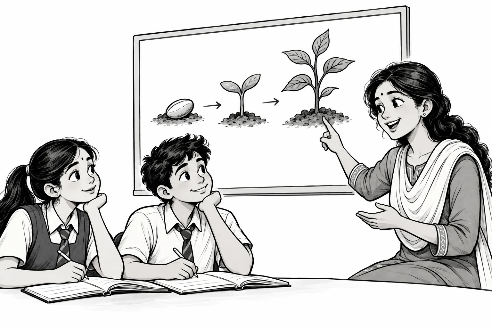

Make the idea visible.
Cartoon scenes give a concept something you can look at and follow. Instead of facing a wall of text, you get a visual way into the chapter.
CLASS 10 BOARD EXAM PREPARATION
LEARN WITH ULTRA 10THमुश्किल chapters. आसान समझ।
We turn Class 10 chapters into cartoon-based explanations, using simple language so you can understand the idea—even when the basics feel difficult.
Understanding comes before memorising.

01 — WHY ULTRA 10TH EXISTS
A little clarityA board-exam chapter can feel overwhelming when the words are unfamiliar or the basics are unclear. Reading the same paragraph again does not always make it easier.
Ultra 10th helps Class 10 students prepare by explaining chapters through cartoons and the easiest language we can use. Our aim is to make learning easier to follow, especially for students who need more support with the foundations.
You don’t have to understand it all at once.
Start with one idea. We’ll explain it simply.
02 — HOW WE TEACH
Our cartoons serve a purpose: to help you see what a chapter is trying to explain.
Cartoon scenes give a concept something you can look at and follow. Instead of facing a wall of text, you get a visual way into the chapter.
We try to explain chapters in the simplest language possible. The focus stays on what an idea means, so difficult wording does not get in the way.
If a topic feels difficult, it is okay to slow down. Our approach is built around helping students understand the foundation before they move ahead.
FOR THE STUDENT WHO SAYS…
“पढ़ता हूँ, लेकिन समझ नहीं आता।”
That is a starting point. Let’s make the chapter easier to understand.03 — THE YOUTUBE CLASSROOM
Visit the channel (opens in a new tab)Our cartoon-based chapter explanations live on the Ultra 10th YouTube channel. Start there, with the topic you are trying to understand.
Open Ultra 10th on YouTube (opens in a new tab)A SIMPLE WAY TO STUDY WITH A VIDEO
Choose your chapter and follow one explanation at a time.
Pause at a new idea. Try saying what it means in your own words.
Replay the part that is still unclear, then try a question from your textbook.
Keep your textbook nearby. A video is a companion to your practice.
04 — BEYOND THE LESSON
We’re bringing study resources together in the Ultra 10th app, so watching a chapter can be followed by reading, practice and revision.
Chapter-wise study material to revisit after an explanation. Use notes to bring the main ideas together and return to a point that needs another look.
Move from understanding an explanation to answering a question yourself. Practice material will help you notice which topics need another attempt.
Revisit what you have already studied as the board exams approach. Short summaries and revision material will help you organise another pass through a chapter.
Planned app resources. The website introduces Ultra 10th; study materials will be provided inside the app.
05 — THE ULTRA 10TH APP
Our next step is to bring Class 10 study resources into one app. Come back to a chapter, find the material you need, and keep preparing at your own pace.
The download link will appear here when the app is available on Google Play. Until then, you can start with our YouTube lessons.
Explore Ultra 10th on YouTube (opens in a new tab)06 — A FEW THINGS TO KNOW
A little more about learning with Ultra 10th.
Ultra 10th is for students preparing for Class 10 board exams. We especially want to help students who find chapters difficult or need simpler explanations of the basics. You do not need to feel confident in a topic before you start learning it.
Cartoons give us a visual way to explain an idea. We combine them with simple language to make the chapter easier to follow. The goal is understanding the lesson, with the animation helping the explanation along.
Visit the Ultra 10th YouTube channel (opens in a new tab) and look for the chapter you are studying. Keep your textbook open, pause when you need to, and follow the lesson with practice.
Study resources will be provided in the Ultra 10th app. This website explains our approach and connects you to the channel and app. The Install App section will link to our Google Play listing when it is available.
For support, feedback or a question about our content, email ultra10th@gmail.com. Including the chapter name or video link will help us understand your message.